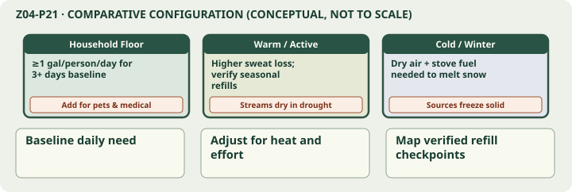

Z04-P21 · Water · New manuscript
Estimate group hydration needs and reserve margins before travel
Plan carried water capacity and refill checkpoints so the group does not run dry in uncertain watersheds.
When it applies · Day hikes, overnight trips and household preparedness across warm, cold and arid or frozen seasons.
Equipment · Leak-proof potable containers, route map marking reliable water sources and weather forecast.

Actions
- Use the CDC household floor of at least 1 gallon per person per day for basic emergency storage, adjusting upward for heat, exertion, pregnancy, illness or pets.[W14, E08]
- Map verified water refill points along backcountry routes and check seasonal status; streams can dry up in late summer or freeze solid in winter.[E01, W09, W25, ED]
- Carry enough verified potable water to reach the next reliable checkpoint plus a delay reserve, along with a working treatment method matched to the route.[W09, W26, ED]
Failure recognition · Starting a hot or strenuous route with minimal carried water while assuming a seasonal creek shown on an old map will still be flowing.[W14, E08, ED]
Verify · Confirm total group liters carried, next reliable refill point and backup plan if that source is dry or contaminated.[W14, W09, ED]
Stop or change course · Turn back early when carried water drops to the return-trip reserve and no verified refill source is confirmed ahead.[E01, W09, ED]
Evidence and editorial notes
- E01 · Minnesota DNR · Safety in State Forests (current web edition)
- Section: Before your trip and while visiting · Conditions: State-forest travel and backcountry planning
Support: Know the route, check conditions, carry navigation and safety equipment and share trip details.
Limitations: Conditions and trail maintenance vary seasonally across forest units. · Conflicting evidence: None; aligns with NPS-H.
Editorial note: Foundation for trip planning and pre-departure risk checks. · Specialist reviewer: Land management and search and rescue
Primary source · checked 2026-11-24 - E08 · CDC · About Heat and Your Health (current web edition)
- Section: Protect yourself from heat · Conditions: Outdoor activity in hot conditions
Support: Limit exertion in hot periods, take breaks in cooler places and monitor for illness.
Limitations: High humidity reduces sweat evaporation and raises heat strain at lower air temperatures. · Conflicting evidence: None; aligns with NWS-HEAT and NIOSH-H.
Editorial note: Anchors shade, pacing, and hot-weather shelter selection. · Specialist reviewer: Heat illness and emergency medicine
Primary source · checked 2026-11-24 - W09 · CDC · Water Treatment Options When Hiking, Camping, or Traveling (current web edition)
- Section: Overview and water treatment methods · Conditions: Hiking or camping where no safe source is confirmed
Support: Even clear water can contain germs. Assess the supply and carry safe water or an appropriate treatment method.
Limitations: Visual clarity never detects microbes or dissolved chemical contaminants. · Conflicting evidence: None across CDC/NPS/EPA sources.
Editorial note: Reinforces clarity-is-not-potability invariant across all Z04 cards. · Specialist reviewer: Drinking-water safety and public health
Primary source · checked 2026-11-24 - W14 · CDC · How to Create an Emergency Water Supply (current web edition)
- Section: How Much Water to Store; Rotation · Conditions: Household emergency water reserve planning
Support: Plan at least 1 gallon per person per day for at least 3 days (more for heat, illness, pregnancy, or pets); rotate self-filled water every 6 months.
Limitations: Backcountry active travel demands vary sharply by exertion, temperature, and humidity. · Conflicting evidence: None; household baseline is cited only as a planning floor, not a physiological maximum.
Editorial note: Distinguishes household storage floors from active field hydration demands. · Specialist reviewer: Household preparedness and drinking-water safety
Primary source · checked 2026-11-24 - W25 · USGS · Snowmelt Runoff and the Water Cycle (current web edition)
- Section: Snowmelt Runoff and the Water Cycle · runoff · Conditions: Late-winter and spring snowpack runoff and melting snow
Support: Melting snow can contribute to runoff and streamflow. The observed result varies with watershed, weather and upstream conditions.
Limitations: This source does not establish a safe crossing hour, a contamination level or a universal meltwater hydrograph. · Conflicting evidence: None; reinforces snow source screening and seasonal runoff shifts.
Editorial note: Supports seasonal snow/ice water cards and meltwater screening. · Specialist reviewer: Hydrology and cold-weather operations
Primary source · checked 2026-11-24 - W26 · NPS · Two Ways to Purify Water (current web edition)
- Section: Two Ways to Purify Water · Conditions: Backcountry water treatment planning in National Parks
Support: Boiling and chemical/filtration methods each have fuel, time, weight, and organism-coverage trade-offs; match the primary method and backup to route conditions and follow directions.
Limitations: Does not resolve chemical spills or algal toxins. · Conflicting evidence: Aligns with CDC-T altitude and parasite limits.
Editorial note: Supports primary-plus-backup water treatment selection in Z04. · Specialist reviewer: Backcountry water safety
Primary source · checked 2026-11-24
Source lineage · CDC emergency supply and NPS hiking safety; new manuscript · Classification · New manuscript.